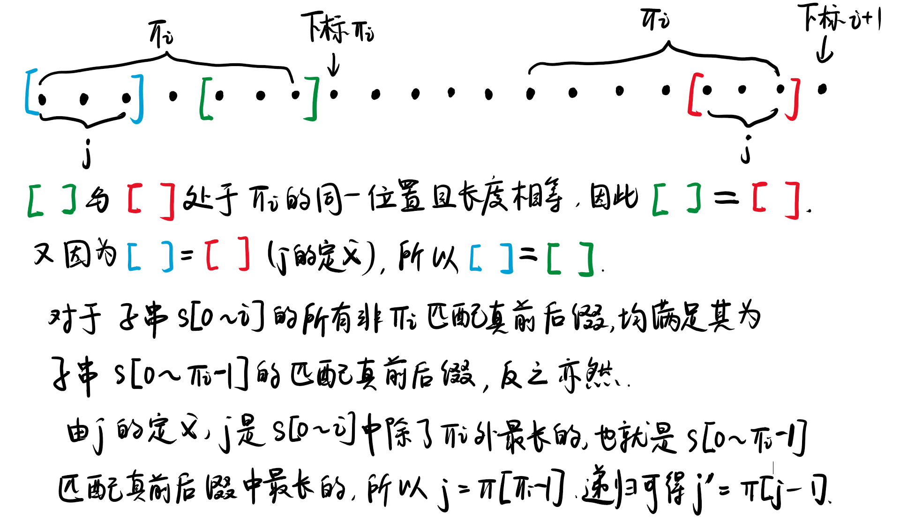

串
约 1149 个字 103 行代码 1 张图片 预计阅读时间 5 分钟
1. 前缀函数与KMP算法
原文链接：
1.1 前缀函数
对于一个长度为 \(n\) 的字符串 \(s\)，其 前缀函数 是一个长度为 \(n\) 的数组 \(\pi\)．而 \(\pi[i]\) 为：对于 \(s\) 的长度为 \(i+1\) 的子串，满足 该子串 真前后缀 相等的最大长度．
例
想要让真前后缀相等，那么必要条件是真前后缀的长度要相等．对于长度为 \(n\) 的字符串，其长度相等的前后缀共有 \(n-1\) 对．
对于字符串 abcabcd：
- \(\pi[0]\)：取长度为 \(1\) 的子串，即
a．该子串不存在真前缀、真后缀，因此 \(\pi[0] = 0\)． - \(\pi[1]\)：取长度为 \(2\) 的子串，即
ab．该子串有一组长度相等真前后缀：a与b：不相等；- 最大长度为 \(0\)，因此 \(\pi[1] = 0\)．
- \(\pi[2]\)：
abc有两组长度相等的真前后缀：a与b：不相等；ab与bc：不相等；- 最大长度为 \(0\)，因此 \(\pi[2] = 0\)．
- \(\pi[3]\)：
abca有三组长度相等的真前后缀：a与a：相等，长度为 \(1\)；ab与ca：不相等；abc与bca：不相等；- 最大长度为 \(1\)，因此 \(\pi[3] = 1\)．
- \(\pi[4]\)：
abcab有四组长度相等的真前后缀：a与b：不相等；ab与ab：相等，长度为 \(2\)；abc与cab：不相等；abca与bcab：不相等；- 最大长度为 \(2\)，因此 \(\pi[4] = 2\)．
- \(\pi[5]\)：
abcabc有五组长度相等的真前后缀：a与c：不相等；ab与bc：不相等；abc与abc：相等，长度为 \(3\)；abca与cabc：不相等；abcab与bcabc：不相等；- 最大长度为 \(2\)，因此 \(\pi[5] = 3\)．
- \(\pi[6]\)：
abcabcd有六组长度相等的真前后缀：a与d：不相等；ab与cd：不相等；abc与bcd：不相等；abca与abcd：不相等；abcab与cabcd：不相等；abcabc与bcabcd：不相等；- 最大长度为 \(2\)，因此 \(\pi[6] = 0\)．
综上，字符串 abcabcd 的前缀函数为 \([0,0,0,1,2,3,0]\)．
用公式表示：\(\pi[i]\) 是在 \(s[0\dots i]\) 中寻找的，每次匹配真前后缀的长度为 \(k\)（其中 \(k=1, 2, \dots i\)），那么前缀范围就是 \(s[0\dots k -1]\)，后缀范围就是 \(s[i - k + 1,i]\)．则有
特别地，当 \(k=0\) 时前缀为 $[0,-1] $，后缀为 \([i+ 1,i]\)，表示为空串，其匹配长度恒为 \(0\)．由于此处我们写的是闭区间，而 C++ 中 substr 方法为左闭右开，因此我们的 \([0, -1]\) 相当于 C++ 中的 substr[0, 0]．
代码实现
代码实现如下，时间复杂度为 \(O(n^3)\)．
std::vector<int> prefix_function(const std::string &s) {
int n = s.size();
std::vector<int> pi(n);
for (int i = 1; i < n; i++) {
int mx = 0;
// k 最大值为 i，即取 0 ~ i - 1
for (int k = 0; k <= i; k++) {
if (s.substr(0, k) == s.substr(i - k + 1, k)) {
mx = std::max(mx, k);
}
}
pi[i] = mx;
}
return pi;
}
简化
对于给定的 \(i\)，如果出现了长度为 \(k\) 的匹配真前后缀，那么长度小于 \(k\) 的永远不会成为答案，因此我们可以倒着求解剪枝，当得到匹配真前后缀后立即返回．虽然时间复杂度还是 \(O(n^3)\)，但比原方法快．
std::vector<int> prefix_function(const std::string &s) {
int n = s.size();
std::vector<int> pi(n);
for (int i = 1; i < n; i++) {
// k 最大值为 i，即取 0 ~ i - 1
for (int k = i; k >= 0; k--) {
if (s.substr(0, k) == s.substr(i - k + 1, k)) {
pi[i] = k;
break;
}
}
}
return pi;
}
1.2 计算前缀函数的高效算法
1.2.1 第一个优化
观察上图，当确定 \(\pi[i] = 3\) 时，我们有 \({s_0 ~ s_1 ~ s_2}={s_{i-2} ~ s_{i-1} ~ s_{i}}\)．若 \(s_3=s_{i+1}\)，则此时 \(\pi[i+1] = 1+\pi[i] = 4\)．反之，若 \(s_3 \ne s_{i +1}\)，必有 \(\pi[i+1]<4\)．因此我们可以得到： 移动到下一个位置时，前缀函数值至多增加 \(1\)．
代码实现
此时的简化算法为：
std::vector<int> prefix_function(const std::string &s) {
int n = s.size();
std::vector<int> pi(n);
for (int i = 1; i < n; i++) {
for (int k = pi[i - 1] + 1; k >= 0; k--) {
if (s.substr(0, k) == s.substr(i - k + 1, k)) {
pi[i] = k;
break;
}
}
}
return pi;
}
时间复杂度分析
定义势能函数 \(\Phi\)：令第 \(i\) 次外层循环结束时的势能 \(\Phi_i = \pi[i]\)，显然 \(\Phi_i \ge 0\) 且 \(\Phi_0 = 0\)．第 \(i\) 次循环开始时，\(k=\pi[i-1]+1\)，相当于势能增加了 \(1\) 个单位；而内层循环每执行一次 k--，势能减少一个单位，同时触发一次字符串比较．
在整个循环中，\(\Phi\) 总增加量为 \(n\)（每次 \(+1\)，循环 \(n\) 次）；由于势能 \(\Phi\ge 0\)，其总减少量必然小于等于 \(n\)；也就是说字符串比较次数为 \(O(n)\) 级别．每次比较是 \(O(k)\) 复杂度，在最坏情况下 \(k\) 会随着 \(n\) 一起线性增长，使得整体复杂度变为 \(O(n^2)\)．
1.2.2 第二个优化
在第一个优化中，我们讨论了 \(\pi[i] = 3\) 时 \(s_3=s_{i+1}\) 的情况．转化成一般情况就是：\(\pi[i]\) 表示长度为 \(i+1\) 的子串 \(s[0\dots i]\) 的前缀 \(s[0\dots \pi[i] - 1]\) 与后缀的 \(\pi[i]\) 个字母相等．如果有 \(s[i+1] = s[\pi[i]]\)，此时就会有 \(\pi[i+1] = \pi[i] + 1\)．
如果 \(s[i+1] \ne s[\pi[i]]\) 呢？我们不希望再次使用 substr 这样的 \(O(n)\) 操作从头开始找，而是希望利用我们已有的东西．记住 \(\pi[i]\) 是“最长相等真前后缀长度”，最长的指望不上，我们还可以指望短一点的．如对于子串 \(s[0\dots i]\)，我们找到仅次于 \(\pi[i]\) 的满足真前后缀相等的长度 \(j\)，即 \(s[0 \dots j-1] = s[i-j+1,i]\)：
若 \(s[j] = s[i+1]\)，那么此时就有 \(\pi[i+1]=j+1\)，否则，我们将继续上述过程，找到仅次于 \(j\) 的满足真前后缀相等的长度 \(j'\)，如此反复直到相等或是 \(j=0\)．当 \(j=0\) 时，我们就要比较 \(s[0]\) 与 \(s[i+1]\)，若相等则 \(\pi[i+1]=1\)，否则 \(\pi[i+1]=0\)．
那我们应该如何找到这个 \(j\)？由于这是一个递归过程，因此只要能在 \(\pi[i]\) 中找到 \(j\)，就能在 \(j\) 中找到 \(j'\)．
寻找 \(j\) 的过程如下图（字不好看，见谅）：

接下来转化到代码中，我们要求的是 \(\pi[i]\) 而不是 \(\pi[i+1]\)，很简单，用 \(i\) 代替 \(i+1\) 即可．初始 \(j=\pi[i-1]\)（即前一段的最长匹配），若 \(s[j]\ne s[i]\)，将其变为第二长匹配 \(j=\pi[j-1]\) 继续判断直到 \(j=0\)．退出循环时若 \(s[i]=s[j]\)，此时 \(\pi[i]=j+1\)；或者是因为 \(j=0\) 而退出循环，并且此时 \(s[j]\ne s[i]\)，则 \(\pi[j]=0\)，为默认值不需要操作．
代码实现
std::vector<int> prefix_function(const std::string &s) {
int n = s.size();
std::vector<int> pi(n);
for (int i = 1; i < n; i++) {
int j = pi[i - 1];
while (j > 0 && s[j] != s[i]) {
j = pi[j - 1];
}
if (s[i] == s[j]) {
pi[i] = j + 1;
}
}
return pi;
}
其时间复杂度可以类比上一段证明，\(j\) 的减少次数在 \(O(n)\) 级别．而现在每次比较只需要单个字符 \(O(1)\) 时间，因此总复杂度为 \(O(n)\)．
1.3 KMP算法
一个人能能走的多远不在于他在顺境时能走的多快，而在于他在逆境时多久能找到曾经的自己。
KMP算法是由 Knuth、Morris 和 Pratt 共同发布的算法，用于解决在字符串查找子串问题．
给定一个长度为 \(n\) 的字符串 \(s\) 与一段长度为 \(m\) 的文本 \(t\)，让我们找到 \(s\) 在 \(t\) 中的所有出现．我们可以将 \(s\) 和 \(t\) 用一个从来不在他们中出现过的字符连接起来，成为 \(s\#t\)．计算其前缀函数．
由于前缀函数不可能超过字符串长度，因此 \(s\) 部分肯定不存在值为 \(n\) 的前缀函数；如果在前缀函数中出现了 \(n\)，说明以该字符结尾的子串与前 \(n\) 个字符相等，而前 \(n\) 个字符为 \(s\)，并且出现 \(n\) 的地方一定在 \(t\) 的部分，也就是我们在 \(t\) 中找到了 \(s\)．
如果在下标 \(i\) 处有 \(\pi[i] = n\)，除去 \(n\) 和连接字符，其在 \(t\) 的下标为 \(i-n-1\)．那么找到的 \(s\) 范围就是 \([i-2n,i-n-1]\)．
Knuth–Morris–Pratt 算法用 \(O(n+m)\) 的时间解决了该问题．
std::vector<int> kmp(const std::string &pattern, const std::string &text) {
int n = pattern.size(), m = text.size();
std::string join = pattern + "#" + text;
std::vector<int> res;
std::vector<int> pi = prefix_function(join);
for (int i = n + 1; i <= n + m; i++) {
if (pi[i] == n) {
res.push_back(i - 2 * n);
}
}
return res;
}
实战
P3375 【模板】KMP 参考代码：
#include <cstring>
#include <iostream>
#include <vector>
std::vector<int> prefix_function(const std::string &s) {
int n = s.size();
std::vector<int> pi(n);
for (int i = 1; i < n; i++) {
int j = pi[i - 1];
while (j > 0 && s[j] != s[i]) {
j = pi[j - 1];
}
if (s[i] == s[j]) {
pi[i] = j + 1;
}
}
return pi;
}
int main() {
std::string text, pattern;
std::cin >> text >> pattern;
int n = pattern.size(), m = text.size();
std::string join = pattern + "#" + text;
std::vector<int> res;
std::vector<int> pi = prefix_function(join);
for (int i = n + 1; i <= n + m; i++) {
if (pi[i] == n) {
std::cout << i - 2 * n + 1 << '\n';
}
}
for (int i = 0; i < n; i++) {
std::cout << pi[i] << ' ';
}
}